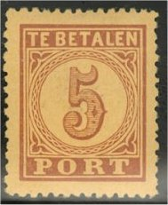
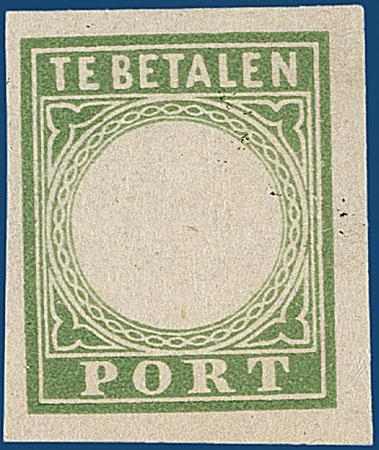
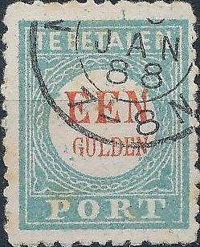
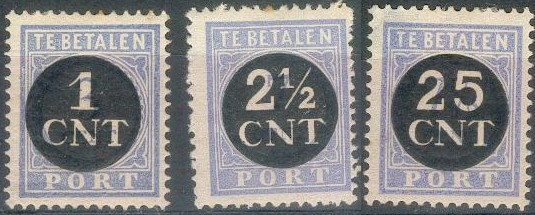
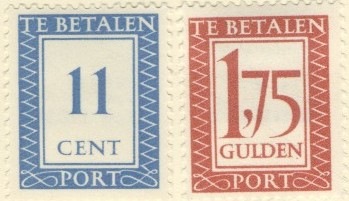
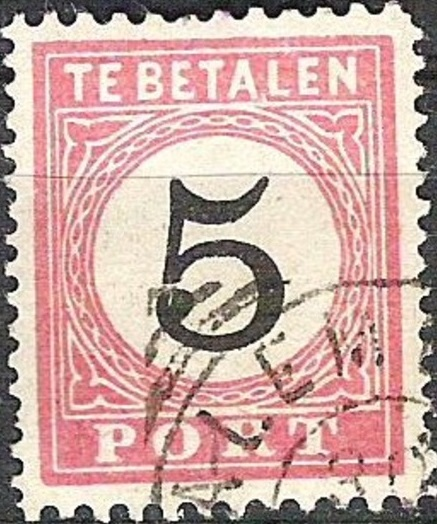
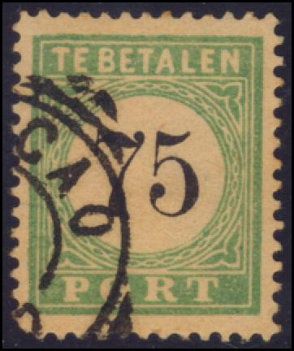
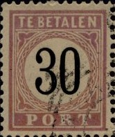
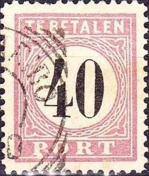

Return To Catalogue - Netherlands - Curacao - Netherlands Indies - Surinam - Netherlands New Guinea
Note: on my website many of the
pictures can not be seen! They are of course present in the
catalogue;
contact me if you want to purchase it.
The postage due stamps of The Netherlands and its colonies can only be distinguished by their colors: in general blue for The Netherlands, green for Curacao, red for Netherlands Indies and lilac for Surinam.

5 c brown on orange 10 c red on blue
These stamps were issued on 15 May 1870.
Value of the stamps |
|||
vc = very common c = common * = not so common ** = uncommon |
*** = very uncommon R = rare RR = very rare RRR = extremely rare |
||
| Value | Unused | Used | Remarks |
| 5 c | R | *** | |
| 10 c | R | *** | |


(Reduced size)
Value in black or red
1/2 c blue and black (1904)
1 c blue and black
1 1/2 c blue and black
2 1/2 c blue and black
3 c blue and black (1910)
4 c blue and black (1909)
5 c blue and black
6 1/2 c blue and black (1907)
7 1/2 c blue and black (1904)
10 c blue and black
12 1/2 c blue and black
15 c blue and black
20 c blue and black
25 c blue and black
1 G ('EEN GULDEN') blue and red
First issued on 1 April 1881. Four types exist which can be distinguished by the circular chain pattern, and especially the position of this pattern directly under the "T" of "BETALEN". Initially the color was light blue, which was changed to dark blue from 1894 onwards.
Surcharged

(Reduced size)
'3 CENT' on 1 G blue and red (1910) '4' on 6 1/2 c blue and black (1909) '6 1/2' on 20 c blue and black (1906) '50 CENT' on 1 G blue and red (1906)
The issue of the '3 CENT' on 1 G stamp seems to have been quite controversial, since almost the whole issue ended up in the hands of one dealer. There seems not to have been much need for this issue, since the regular 3 c stamp appeared almost simultaneously (source: 'The Postage Stamp' 3 June 1911).
Value of the stamps |
|||
vc = very common c = common * = not so common ** = uncommon |
*** = very uncommon R = rare RR = very rare RRR = extremely rare |
||
| Value | Unused | Used | Remarks |
| Cheapest types | |||
| 1/2 c | c | c | |
| 1 c | c | c | |
| 1 1/2 c | c | c | |
| 2 1/2 c | c | vc | |
| 3 c | c | c | |
| 4 c | * | * | |
| 5 c | c | vc | |
| 6 1/2 c | *** | *** | |
| 7 1/2 c | * | * | |
| 10 c | * | c | |
| 12 1/2 c | * | c | |
| 15 c | * | c | |
| 20 c | * | c | |
| 25 c | * | c | |
| 1 G | *** | ** | |
Surcharged |
|||
| 3 c on 1 G | *** | *** | |
| 4 c on 6 1/2 c | c | * | |
| 6 1/2 c on 20 c | * | * | |
| 50 c on 1 G | *** | R | |

Forgery of a 'proof' made by Pierre Vos.
Some other Pierre Vos products, reduced
sizes.

Possibly other Pierre Vos products.

Forgery of the "EEN GULDEN" stamp. It is described in
the 'Vervalsingen van Nederland & O.G.' by Van de Loo. There
are blue spots in the central white circle. The same forged
cancel appears to be applied on most forgeries (but it does not
extend to the borders of the stamp, indicating that it might have
been printed with the stamp). The perforation is not correct. It
first appeared in Amsterdam in 1892.

1/2 c blue 1 c blue 1 1/2 c blue 2 1/2 c blue 3 c blue 4 c blue 4 1/2 c blue 5 c blue 5 1/2 c blue 7 c blue 7 1/2 c blue 10 c blue 12 1/2 c blue 15 c blue 20 c blue 25 c blue 50 c blue Surcharged with black circle with value

'1 CNT' on 3 c blue '2 1/2 CNT' on 7 c blue '25 CNT' on 1 1/2 c blue '25 CNT' on 7 1/2 c blue
Value of the stamps |
|||
vc = very common c = common * = not so common ** = uncommon |
*** = very uncommon R = rare RR = very rare RRR = extremely rare |
||
| Value | Unused | Used | Remarks |
| Cheapest types | |||
| 1/2 c | vc | vc | |
| 1 c | vc | vc | |
| 1 1/2 c | c | c | |
| 2 1/2 c | c | vc | |
| 3 c | c | c | |
| 4 c | c | c | |
| 4 1/2 c | c | c | |
| 5 c | c | vc | |
| 5 1/2 c | c | c | |
| 7 c | * | * | |
| 7 1/2 c | c | c | |
| 10 c | c | vc | |
| 12 1/2 c | c | c | |
| 15 c | * | vc | |
| 20 c | * | c | |
| 25 c | * | c | |
| 50 c | * | c | |
| Surcharged | |||
| 1 c on 3 c | c | c | |
| 2 1/2 c on 7 c | c | c | |
| 25 c on 1 1/2 c | * | c | |
| 25 c on 7 1/2 c | * | c | |
3 c blue 6 c blue 7 c blue 7 1/2 c blue 8 c blue 9 c blue 11 c blue 12 c blue 25 c blue 30 c blue 1 G red
A forgery exists of the "1 GLD" stamp. For more information see 'Vervalsingen van Nederland & O.G.' by Van de Loo.

(Reduced size)
1/2 c on 1 c lilac 1 c on 1 c lilac 1 1/2 c on 1 c lilac 2 1/2 c on 1 c lilac 5 c on 2 1/2 c red 6 1/2 c on 2 1/2 c red 7 1/2 c on 1/2 c blue 10 c on 1/2 c blue 12 1/2 c on 1/2 c blue 15 c on 2 1/2 c red 25 c on 1/2 c blue 50 c on 1/2 c blue 1 G on 1/2 c blue
'4 CNT' on 3 c green '5 CNT' on 1 c red '10 CNT' on 1 1/2 c blue '12 1/2 CNT' on 5 c red

(Control stamp)
Similar stamps with 11 c on 22 1/2 c and 15 c on 17 1/2 c are control stamps and not postage due stamps. They were used for by the postal service for internal accounting purposes in 1923/1924. Unused stamps were not given off to the public. Three different perforations exist combperforation 12 1/2, lineperforation 11 1/2 x 11 and lineperforation 11 1/2. 66300 stamps of the 11 c on 22 1/2 c were issued and 25300 of the 15 c on 17 1/2 c. Forged overprints are known.

1 c blue 3 c blue 4 c blue 5 c blue 6 c blue 7 c blue 8 c blue 10 c blue 11 c blue 12 c blue 14 c blue 15 c blue 16 c blue 20 c blue 24 c blue 25 c blue 26 c blue 30 c blue 35 c blue 40 c blue 50 c blue 60 c blue 85 c blue 90 c blue 95 c blue 1 G red 1.75 G red
5 c yellow 10 c green on yellow 15 c orange on yellow 20 c green on blue
The cancels on this issue are usually the numeral dot cancel (as in the 20 c shown above). On envelopes, sometimes the cancel "ONTOEREIKEND" (not paid enough) can be found. If the receiver did not want to pay the postage due, the postal authorities put a cross through the postage due stamp with a pen.
Value of the stamps |
|||
vc = very common c = common * = not so common ** = uncommon |
*** = very uncommon R = rare RR = very rare RRR = extremely rare |
||
| Value | Unused | Used | Remarks |
| 5 c | RR | RR | |
| 10 c | R | R | |
| 15 c | *** | *** | |
| 20 c | *** | ** | |
A forgery of the 5 c exists with the top left
part of the "5" too thin. It is cancelled with a
numeral "3" cancel.
In his 1906 pricelist, the stamp forger Oneglia offers a forgery
of the 5 c yellow on blue. I do not know if this is the same
forgery as described above.


2 1/2 c red and black 5 c red and black 10 c red and black 15 c red and black 20 c red and black 30 c red and black 40 c red and black 50 c red and black 75 c red and black
Value of the stamps |
|||
vc = very common c = common * = not so common ** = uncommon |
*** = very uncommon R = rare RR = very rare RRR = extremely rare |
||
| Value | Unused | Used | Remarks |
| Cheapest types | |||
| 2 1/2 c | c | c | |
| 5 c | c | c | |
| 10 c | * | * | |
| 15 c | * | * | |
| 20 c | *** | c | |
| 30 c | * | * | |
| 40 c | * | * | |
| 50 c | * | * | |
| 75 c | * | * | |
The forger Fournier is known to have made forgeries of these stamps. I've seen the values 15 c, 40 c and 75 c. I don't know the distinguishing characteristics. Fournier also made the forged cancels "WELTEVREDEN 6 7 1890" and "PALEMBANG 30 7 1886" both in the above type. I've seen the Palembang cancel on forged postage due stamps.

Fournier forgery of the 5 c.
The Weltevreden and Palembang forged Fournier cancels, pictures
taken from a 'Fournier Album of Philatelic Forgeries'.
"BLITAR" forged Fournier cancel.
Fournier also used the forged cancel "BLITAR 29 2 1887" (same style as above, wrongly listed under German Morocco in the Fournier Album) and "BAJOENGLENTJIR 29 6 1886" (wrongly listed under Hamburg in the Fournier Album).
Another forgery of the 30 c is listed in 'Vervalsingen van Nederland & O.G.' by Van de Loo. It has the "N" of "BETALEN" too close to the right hand frame. It also sometimes has the forged cancel "SEMARANG 14 8 1894".


2 1/2 c red and black 5 c red and black 10 c red and black 15 c red and black 20 c red and black 30 c red and black 40 c red and black 50 c red and black 75 c red and black
Value of the stamps |
|||
vc = very common c = common * = not so common ** = uncommon |
*** = very uncommon R = rare RR = very rare RRR = extremely rare |
||
| Value | Unused | Used | Remarks |
| Cheapest types | |||
| 2 1/2 c | c | c | |
| 5 c | c | c | |
| 10 c | * | c | |
| 15 c | * | c | |
| 20 c | * | c | |
| 30 c | ** | * | |
| 40 c | ** | * | |
| 50 c | ** | * | |
| 75 c | ** | * | |
According to the book 'Vervalsingen van Nederland & O.G.' by Van de Loo, a forgery exists of the 2 1/2 c value, with either the forged cancel "BATAVIA 13 5 1898" or a forged cancel with dots. These forgeries often have mirror imprints on the back. The color is slightly different from a genuine stamp.
1 c red 1 c violet 2 1/2 c red 2 1/2 c brown 3 1/2 c red 3 1/2 c blue 5 c red 5 c orange 7 1/2 c red 7 1/2 c green 10 c red 10 c lilac 12 1/2 c red 15 c red 20 c red 20 c blue 25 c red 25 c olive 30 c red 30 c brown 37 1/2 c red 40 c red 40 c green 50 c red 50 c yellow 75 c red 75 c blue 100 c green 1 G red 1 G blue Surcharged (1937)

'20' on 37 1/2 c red
Value of the stamps |
|||
vc = very common c = common * = not so common ** = uncommon |
*** = very uncommon R = rare RR = very rare RRR = extremely rare |
||
| Value | Unused | Used | Remarks |
| All values | c to * | vc to * | |
Later stamps from Indonesia have similar designs, but with inscription "BAJAR PORTO":
2 1/2 c on 10 c red 10 c red 20 c violet
2 1/2 c green and black 5 c green and black 10 c green and black 12 1/2 c green and black 15 c green and black 20 c green and black 25 c green and black 30 c green and black 40 c green and black 50 c green and black
These stamps have perforation 12 1/2 x 12.
Value of the stamps |
|||
vc = very common c = common * = not so common ** = uncommon |
*** = very uncommon R = rare RR = very rare RRR = extremely rare |
||
| Value | Unused | Used | Remarks |
| Cheapest types | |||
| 2 1/2 c | *** | *** | |
| 5 c | ** | ** | |
| 10 c | R | R | |
| 12 1/2 c | RR | RR | |
| 15 c | R | R | |
| 20 c | R | R | |
| 25 c | RR | RR | |
| 30 c | R | R | |
| 40 c | *** | *** | |
| 50 c | R | R | |
Forgeries, examples:

I have seen a 75 c of this series with cancel Curacao, I think this must be a bogus issue:

(Bogus issue?)
(Fournier forgery?)
I think the above stamp is a Fournier forgery. Exactly the same cancel (same date) can be found in the Fournier album of philatelic forgeries: "CURACAO 5 3 1890" in a circle with additional parts of circles added to make it look like a square.

Fournier forgery as taken from a Fournier Album.

Fournier forgeries as taken from a Fournier Album. The Paramaribo
cancel is actually from Surinam.
Fournier forged at least the following values: 40 c, 50 c and 75 c (bogus).
2 1/2 c green and black 5 c green and black 10 c green and black 12 1/2 c green and black 15 c green and black 20 c green and black 25 c green and black 30 c green and black 40 c green and black 50 c green and black
These stamps have perforation 12 1/2.
Value of the stamps |
|||
vc = very common c = common * = not so common ** = uncommon |
*** = very uncommon R = rare RR = very rare RRR = extremely rare |
||
| Value | Unused | Used | Remarks |
| Cheapest types | |||
| 2 1/2 c | * | * | |
| 5 c | * | * | |
| 10 c | * | * | |
| 12 1/2 c | ** | ** | |
| 15 c | ** | ** | |
| 20 c | ** | ** | |
| 25 c | ** | ** | |
| 30 c | *** | *** | Only one type |
| 40 c | *** | *** | Only one type |
| 50 c | *** | *** | Only one type |

2 1/2 c green 5 c green 10 c green 12 1/2 c green 15 c green 20 c green 25 c green 30 c green 40 c green 50 c green
These stamps have perforation 12 1/2.
Value of the stamps |
|||
vc = very common c = common * = not so common ** = uncommon |
*** = very uncommon R = rare RR = very rare RRR = extremely rare |
||
| Value | Unused | Used | Remarks |
| 2 1/2 c | c | c | |
| 5 c | * | * | |
| 10 c | * | * | |
| 12 1/2 c | * | * | |
| 15 c | * | * | |
| 20 c | * | * | |
| 25 c | * | * | |
| 30 c | ** | ** | |
| 40 c | ** | ** | |
| 50 c | ** | ** | |
1 c green 2 1/2 c green 5 c green 6 c green 7 c green 8 c green 9 c green 10 c green 12 1/2 c green 15 c green 20 c green 25 c green 30 c green 35 c green 40 c green 45 c green 50 c green



2 1/2 c lilac and black 5 c lilac and black 10 c lilac and black 20 c lilac and black 25 c lilac and black 30 c lilac and black 40 c lilac and black 50 c lilac and black Surcharged (1911)

'10 cent' (red) on 30 c lilac and black '10 cent' (red) on 50 c lilac and black
Value of the stamps |
|||
vc = very common c = common * = not so common ** = uncommon |
*** = very uncommon R = rare RR = very rare RRR = extremely rare |
||
| Value | Unused | Used | Remarks |
| Cheapest types | |||
| 2 1/2 c | ** | * | |
| 5 c | ** | ** | |
| 10 c | R | R | |
| 20 c | *** | *** | |
| 25 c | *** | *** | |
| 30 c | * | * | |
| 40 c | *** | *** | |
| 50 c | ** | * | |
| Surcharged | |||
| 10 c on 30 c | *** | *** | |
| 10 c on 50 c | R | R | |
I have seen forgeries of the 20 c, 30 c and 40 c of this set with a non-existant 'SURINAME 29 4 1892' cancel in a circle with lines in the corners to make it look like a square.


Fournier forgeries, some of them with "PARAMARIBO 2 7
1890" cancel. The perforations don't 'match' in the corners
as they should in the genuine stamps.

Page from a Fournier Album of Philatelic Forgeries.

Forged Fournier cancel "PARAMARIBO 2 7 1890"

Some other forgeries exist with a non-existing "SURINAME 29
4 1892'' cancel. I think the above stamp is such a forgery.

2 1/2 c lilac and black 5 c lilac and black 10 c lilac and black 20 c lilac and black 25 c lilac and black 40 c lilac and black
Value of the stamps |
|||
vc = very common c = common * = not so common ** = uncommon |
*** = very uncommon R = rare RR = very rare RRR = extremely rare |
||
| Value | Unused | Used | Remarks |
| Cheapest types | |||
| 2 1/2 c | c | c | |
| 5 c | * | * | |
| 10 c | *** | *** | |
| 20 c | *** | *** | |
| 25 c | *** | *** | |
| 40 c | ** | ** | |
1/2 c lilac 1 c lilac 2 c lilac 2 1/2 c lilac 5 c lilac 10 c lilac 12 c lilac 12 1/2 c lilac 15 c lilac 20 c lilac 25 c lilac 30 c lilac 40 c lilac 50 c lilac 75 c lilac 1 G lilac
Value of the stamps |
|||
vc = very common c = common * = not so common ** = uncommon |
*** = very uncommon R = rare RR = very rare RRR = extremely rare |
||
| Value | Unused | Used | Remarks |
| 1/2 c | vc | vc | 1930 |
| 1 c | vc | vc | 1931 |
| 2 c | vc | vc | 1931 |
| 2 1/2 c | c | c | |
| 5 c | c | c | |
| 10 c | c | c | |
| 12 1/2 c | c | c | 1922 |
| 15 c | c | c | 1926 |
| 20 c | * | c | |
| 25 c | * | c | |
| 30 c | * | * | 1926 |
| 40 c | * | * | |
| 50 c | * | * | 1926 |
| 75 c | * | * | |
| 1 G | ** | ** | 1928 |
In 1926, the 40 c was overprinted with "Frankeerzegel 12 1/2 CENT SURINAME" (two types) to serve as postage stamps.

1 c lilac 5 c lilac 25 c lilac
1 c lilac 2 c lilac 2 1/2 c lilac 5 c lilac 10 c lilac 15 c lilac 20 c lilac 25 c lilac 50 c lilac 75 c lilac 1 G lilac
Another set exists with 'SURINAME' on top and 'TE BETALEN' in lilac written in the white space below it: 1 c, 2 c, 2 1/2 c, 5 c, 10 c, 15 c, 20 c, 25 c, 50 c, 75 c, 1 G (all in lilac).
1 c red 5 c red 10 c red 25 c red 40 c red 1 G blue


{kind=link}
{kind=link}
{kind=link}
{kind=link}
{kind=link}
{kind=link}
{kind=link}
{kind=link}
{kind=link}
{kind=link}